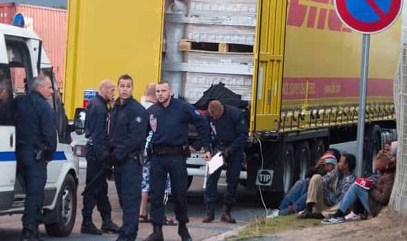

< < < Back
Syrian “Refugees” Fake Passports And Illnesses To Get Maximum Government Benefits – Return Of Kings
Dutch reporter Harald Doornbos recently purchased a very high quality Syrian passport for just $825, using the photograph of Dutch Prime Minister Mark Rutte. The whole process took just over a day and a half, commencing with a simple phone call to the fake passport producer. Casting aside, however difficult, the incredible opportunity that the fake passport industry gives to terrorists, it represents a bonanza, too, for millions of future migrants.
The cost of fake documents equates to only a week or half a month’s worth of potential welfare as “refugees” in high-income European countries like Great Britain, the Netherlands, Sweden and Germany. The projected return on investment for many people aspiring to suck at European’s prodigious social security teats would be astounding. And sadly, the fake passport producer Doornbos dealt with is only one of many. Many tailor their prices to particular buyers, especially for customers keen to haggle and after manufacturing equipment has paid for itself in the first days and weeks of increased operation.
Using Rutte’s photo and fair complexion would obviously raise eyebrows at any border checkpoint (assuming the EU can even marginally police its periphery, which has been proven to be grossly false) but it is a brilliant way to virally show how easily migrants can assume identities taken as Gospel truth by self-hating European governments and SJWs.
Fake asylum claims have been going on years

So if Britain lets these people in to determine their asylum claims, how many will actually be sent back?
In the case of just one couple using fake identities to claim asylum in Britain, they were able to steal £134,438 (around $200,000 USD in October 2015) worth of welfare payments over just half a decade. The retort you would expect from SJWs, that this happens rarely, is nothing but a smokescreen for the fact that investigating authorities substantially lack the resources to test the veracity of asylum seekers’ identities, let alone the claims for asylum they make.
Determination of an asylum claim rarely raises questions of how the individual is threatened or faces persecuted. Broad brush arguments like being a member of a minority are immediately invoked, with little appreciation of personal context. And the person claiming asylum is the one who reaps the underlying economic rewards of entry to a welfare system that mollycoddles them ad infinitum.
Better yet, the culture of “let them all in” disregards how asylum seekers have that funny habit of crossing incessantly into new countries until they find one with a particularly large welfare teat. They don’t stop in Greece, Italy, Serbia, or Croatia, states which either have smaller welfare states or more hostile (read: common sense) attitudes to uninvited, illegally-entering foreigners.
It’s not just about the deception of fake passports
https://twitter.com/cernovich/status/643388049058078720
Mike Cernovich and others have highlighted the fact that migrants to Europe are already being coached to feign illness. The internet is replete with other examples of how Western do-gooders are abetting non-lawful and oftentimes criminal exaggerations and falsifications of asylum seeker narratives.
European elites like to avoid proper conjecture on why hundreds of thousands are entering Europe (I guess those sub-Saharan looking asylum seekers are Syrian as well?), preferring to believe the fairytale that people only come if they have no choice. But the promise of generous and constant welfare payments has nothing at all to do with it, they say.
Not only do these economic migrants have the desire and ability to craft a favorable story to try and get (for them) a positive outcome, they are increasingly armed with low-cost but sophisticated means of achieving it. From lorry trucks delivering payloads of human cargo, which travel with impunity 99.9% of the time due to European Union states having open borders with one another, to the fake passport industry, there has been no better time to come to Europe with an unsubstantiated claim for asylum.
A true refugee can stop in the first safe country they arrive in

Want to stop a population’s on-the-street anger about immigration from reaching critical mass? Call them “Nazis”, as has happened to hundreds of thousands of Greeks who have supported Golden Dawn over the last five years.
SJWs and European elites are high on rhetoric and low on evidence and facts. We see this time and time again in areas as diverse as “rape culture” hysteria, invented allegations of Western racism and the promotion of obesity to obtain so-called self-esteem for all. What is left in the dust regarding the present European migrant crisis is a) why non-Western (i.e. non-European) countries around the world are doing nothing and getting away with it, and b) why apparent refugees do not stop their trek at the point at which they are safe from harm.
These issues will not be answered by our opponents because they force a complete rethink on why Europe is somehow obligated to house entire nations of human beings in the first place. Saudi Arabia? No. Japan? No. Korea? No. But the West? Open your borders or you’re inveterate fascist-racists who institutionalize global oppression.
Europe is now the toilet expected to flush every problem in the world. The problem is, there’s no plumber that can fix what will become of this sick continent in a decade or so.
Read More: Photograph Yourself In Your Prime